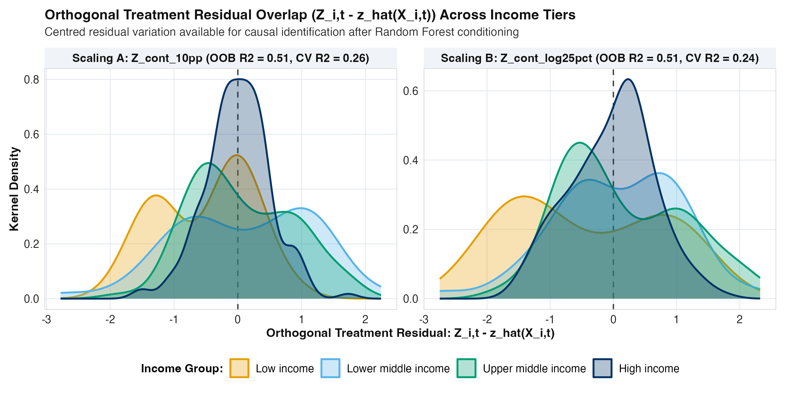

Exploratory Data Analysis: Continuous University Funding Intensity and the Future Tax Take
1 Overview, Continuous Treatment Design, and Holdout Protocol
This exploratory data analysis (EDA) audits the global fiscal and tertiary education panel (data/processed/clean_tax_panel.csv, spanning 1,736 country-waves across 217 sovereign countries from 1985-1989 to 2020-2024) prior to estimating our continuous-treatment Multivariate Bayesian Causal Forest (MV-BCF) models. Our primary hypothesis is that higher national government expenditure on tertiary (university) education increases a country’s future tax take at the \(+5\)-year and \(+10\)-year horizons, and that this fiscal return operates specifically through direct income, profit, and capital gains taxation rather than indirect consumption taxes.
To ensure leakage-free causal and out-of-sample evaluation, our Phase 2 and Phase 3 workflow enforces four design safeguards:
- Country-Blocked Holdout Split Locked Prior to EDA: All 217 sovereign countries are partitioned via an income-group stratified 5-fold country-blocked split (
data/processed/splits/country_folds.csv,set.seed(20261103)). Folds 1 to 4 form the 80% Training Set (98countries /301country-waves at \(+5\) years;90countries /229country-waves at \(+10\) years), while Fold 5 forms the 20% Locked Holdout Test Set (23unseen countries /70country-waves at \(+5\) years;22unseen countries /54country-waves at \(+10\) years). All income-group centring medians and all Phase 3 EDA diagnostics in Sections 3 to 7 of this report are computed strictly on the 80% Training Set. - Dual Continuous University Funding Scalings (\(Z_{i,t} \in \mathbb{R}\)): Rather than dichotomising university funding at an arbitrary median boundary, we retain the full continuous dose of public tertiary investment and evaluate two complementary scalings side by side:
- Scaling A (
Z_cont_10pp, Additive Per-Student Intensity): Winsorised public expenditure per tertiary student ([1, 150]% of GDP per person), centred on each World Bank income group’s training-set median and divided by \(10.0\), so that \(+1\) unit represents a \(+10\) percentage point increase in per-student funding (% of GDP per person). - Scaling B (
Z_cont_log25pct, Multiplicative Log-Relative Intensity): Natural log of public expenditure per tertiary student, centred on each World Bank income group’s training-set log median and divided by \(\log(1.25) \approx 0.2231\), so that \(+1\) unit represents a \(+25\%\) relative increase in per-student funding. - Unbundled Continuous Denominators: We also construct continuous real 2021 PPP dollars per student (
Z_cont_real_ppp_log25pct, removing GDP per person from the denominator), continuous public tertiary budget share of GDP (Z_cont_budget_gdp_025pp, removing student headcount from the denominator), and within-country 5-year per-student funding changes (Z_cont_delta_10pp).
- Scaling A (
- Random Forest Expected-Treatment Conditioning \(\hat{z}(X_{i,t}) = \mathbb{E}[Z_{i,t} \mid X_{i,t}]\): For continuous treatments, the binary propensity score \(P(Z=1 \mid X)\) is replaced by the pre-treatment expected-treatment score \(\hat{z}(X_{i,t}) = \mathbb{E}[Z_{i,t} \mid X_{i,t}]\) estimated via a 500-tree Random Forest (
ranger) across all 19 pre-treatment baseline covariates. Including \(\hat{z}(X_{i,t})\) inside the prognostic forest \(\mu(X_{i,t}, \hat{z}_{i,t})\) prevents regularisation-induced confounding by allowing the prognostic trees to partial out expected policy intensity before estimating the heterogeneous causal slope \(\tau(X_{i,t}) \cdot Z_{i,t}\). - Four Pure Disaggregated Tax Outcomes (Zero GDP Product Identities):
- \(Y_1\): Domestic Non-Resource Tax-to-GDP Change (\(\Delta \text{Tax/GDP}\), percentage points of GDP), paired with unadjusted World Bank WDI \(\Delta \text{Tax/GDP}\) as a sensitivity check.
- \(Y_2\): Direct Income, Profit, and Capital Gains Tax-to-GDP Change (\(\Delta \text{IncomeTax/GDP}\), percentage points of GDP).
- \(Y_3\): Direct Income and Profit Share of Revenue Change (\(\Delta \text{IncomeTax/Rev}\), percentage points of revenue).
- \(Y_4\): Indirect Goods and Services (Consumption / VAT) Share of Revenue Change (\(\Delta \text{GoodsTax/Rev}\), percentage points of revenue), which serves as a built-in specificity (negative-control) channel.
2 Sample Coverage, Quality Screening, and Train/Holdout Split
Before constructing the estimation samples, our hygiene audit in src/r/02_build_clean_tax_panel.R verifies zero duplicate (iso3, wave_index) keys and screens out four physically impossible World Bank WDI tax-to-GDP entries (<0.5% or >60.0% of GDP: Sudan in 1995-1999 at 629.19%, Timor-Leste in 2010-2014 at 109.99%, and the United Arab Emirates in 2010-2014 at 0.34% and 2015-2019 at 0.23%) plus one UNESCO tertiary per-student unit-scale error (<1.0% of GDP per person: Madagascar in 2015-2019 at 0.0359%, where a \(10^{-3}\) decimal shift occurred relative to its adjacent 99.1% and 151.4% waves). Table 1 documents sample coverage, attrition, and the 80% / 20% country-blocked split.
1985-1989 to 2020-2024). Shares in rows 6-7 and 9-10 denote percentages of the complete \(+5\text{y}\) and \(+10\text{y}\) panels.
| Stage | Sample Definition | Country-Waves | Countries | Share (%) |
|---|---|---|---|---|
| 1. Full Global Panel | 217 sovereign countries \(\times\) 8 waves (1985-2024) |
1,736 | 217 | 100.0% |
| 2. Valid Tax / GDP | Observed non-resource tax-to-GDP after anomaly screen | 914 | 159 | 52.6% |
| 3. 4-Channel Tax Vector | All 4 disaggregated tax outcomes observed at wave \(t\) | 883 | 157 | 50.9% |
| 4. Observed Continuous \(Z\) | Valid UNESCO per-student tertiary spend (\(\ge 1\%\) GDP/pc) | 511 | 166 | 29.4% |
| 5. Full \(+5\text{y}\) Sample | Complete 4-channel changes over \([t, t+1]\) + continuous \(Z\) | 371 | 121 | 21.4% |
| 6. \(+5\text{y}\) Training (80%) | Training countries (Folds 1 to 4) for EDA & fitting | 301 | 98 | 81.1% |
| 7. \(+5\text{y}\) Holdout (20%) | Locked holdout test countries (Fold 5) for validation | 70 | 23 | 18.9% |
| 8. Full \(+10\text{y}\) Sample | Complete 4-channel changes over \([t, t+2]\) + continuous \(Z\) | 283 | 112 | 16.3% |
| 9. \(+10\text{y}\) Training (80%) | Training countries (Folds 1 to 4) for EDA & fitting | 229 | 90 | 80.9% |
| 10. \(+10\text{y}\) Holdout (20%) | Locked holdout test countries (Fold 5) for validation | 54 | 22 | 19.1% |
3 Unbundling the UNESCO Denominator Trap and Comparing Scalings A & B
Why is unbundling the tertiary spending denominator and comparing linear (Z_cont_10pp) versus log-relative (Z_cont_log25pct) scalings essential in cross-national work? Table 2 compares the continuous tertiary spending indicators and baseline fiscal structure across the four World Bank income groups within the 80% Training Set.
Z_cont_10pp) and Scaling B (Z_cont_log25pct), and baseline fiscal structure by World Bank income group.
| Income Group (Train Countries, Waves) | Median UNESCO Ratio (IQR) | \(\text{SD}(Z_{\text{10pp}})\) (Scaling A) | \(\text{SD}(Z_{\text{log25\%}})\) (Scaling B) | Real PPP $ / Student | Tertiary Budget (% GDP) | Direct Income Tax Share (%) |
|---|---|---|---|---|---|---|
| Low income (17, 67) | 183.8% (203.4%) | 3.17 | 3.39 | $3,953 | 0.47% | 27.5% |
| Lower middle (33, 139) | 68.9% (107.5%) | 5.23 | 5.33 | $3,162 | 0.65% | 30.9% |
| Upper middle (44, 176) | 27.6% (21.2%) | 3.01 | 3.22 | $3,631 | 0.66% | 34.7% |
| High income (58, 278) | 26.4% (13.4%) | 1.47 | 1.86 | $10,906 | 0.94% | 38.3% |
Three structural insights emerge from Table 2:
- The Cross-Income-Group Denominator Paradox: In Low income training countries, median gross university enrolment is only
2.8%, so dividing a modest public university budget (0.47%of GDP) by a small elite student cohort and a low GDP per person yields an un-winsorised median UNESCO ratio of183.8%(IQR = 203.4%). Conversely, in High income training countries where59.9%of the cohort attends university, the median UNESCO ratio is26.4%(IQR = 13.4%), even though high-income states spend nearly three times as much per student in real purchasing power ($10,906 vs $3,953) and twice as much of their GDP on public universities (0.94% vs 0.47%). Centring bothZ_cont_10ppandZ_cont_log25pcton each country’s own training-set World Bank income-group median removes this cross-tier baseline inversion while preserving full continuous within-tier variation. - Scale Heteroscedasticity in Scaling A vs Scaling B: Under the additive linear scaling (
Z_cont_10pp), a \(+1\) unit change (\(+10\) percentage points of GDP per person) represents a38%relative funding expansion in a typical High income country (median26.4%), but only a5.4%relative expansion in a typical Low income country (median183.8%). Furthermore, because over half of Low income observations exceed150%, winsorising linearZ_cont_10ppat[1, 150]clamps the upper half of Low income country-waves at the ceiling. - Why Scaling B (
Z_cont_log25pct) Stabilises Cross-Tier Leverage: DefiningZ_cont_log25pcton the natural log scale (\(\log(\text{Spend}) - \text{ Median}_{\text{inc}}(\log(\text{Spend}))\) divided by \(\log(1.25)\)) naturally compresses extreme right-tail ratios without artificial ceiling clamping and ensures that \(+1\) unit corresponds to the same \(+25\%\) proportional funding expansion at every stage of economic development. We therefore fit and audit our Multivariate BCF models under both Scaling A and Scaling B in Phase 4 to test whether linear or proportional dose-response fits the data better.
4 Training-Set Raw Continuous Slopes and Bivariate Dose-Response
Table 3 and Figure 1 present the raw, unadjusted continuous OLS slopes (per \(+1\) unit of \(Z\)) and treatment-tertile means across all four fiscal outcomes in the 80% Training Set before any covariate or causal forest adjustment.
| Scaling & Horizon | Summary Group | Waves (\(N\)) | Countries | \(\Delta\) Non-Res Tax/GDP | \(\Delta\) Income Tax/GDP | \(\Delta\) Income Tax Share | \(\Delta\) Goods Tax Share |
|---|---|---|---|---|---|---|---|
| Scaling A (\(+5\text{y}\)) | Linear OLS Slope | 301 | 98 | -0.044 | +0.007 | +0.023 | +0.039 |
| Scaling A (\(+5\text{y}\)) | Tertile 1 (Lowest \(Z\)) | 101 | 48 | +0.43 | +0.32 | +1.34 | +0.68 |
| Scaling A (\(+5\text{y}\)) | Tertile 3 (Highest \(Z\)) | 100 | 46 | +0.23 | +0.40 | +1.77 | +0.49 |
| Scaling A (\(+10\text{y}\)) | Linear OLS Slope | 229 | 90 | +0.022 | +0.030 | -0.063 | +0.153 |
| Scaling A (\(+10\text{y}\)) | Tertile 1 (Lowest \(Z\)) | 77 | 45 | +0.52 | +0.59 | +3.00 | +0.76 |
| Scaling A (\(+10\text{y}\)) | Tertile 3 (Highest \(Z\)) | 76 | 39 | +0.87 | +0.85 | +3.20 | +0.77 |
| Scaling B (\(+5\text{y}\)) | Linear OLS Slope | 301 | 98 | -0.058 | -0.004 | +0.012 | -0.068 |
| Scaling B (\(+5\text{y}\)) | Tertile 1 (Lowest \(Z\)) | 101 | 48 | +0.42 | +0.31 | +1.38 | +0.52 |
| Scaling B (\(+5\text{y}\)) | Tertile 3 (Highest \(Z\)) | 100 | 42 | +0.16 | +0.36 | +1.73 | +0.35 |
| Scaling B (\(+10\text{y}\)) | Linear OLS Slope | 229 | 90 | -0.010 | -0.012 | -0.185 | -0.037 |
| Scaling B (\(+10\text{y}\)) | Tertile 1 (Lowest \(Z\)) | 77 | 45 | +0.54 | +0.54 | +2.62 | +0.82 |
| Scaling B (\(+10\text{y}\)) | Tertile 3 (Highest \(Z\)) | 76 | 40 | +0.79 | +0.81 | +3.20 | +0.64 |

Comparing the tertile means against the raw linear OLS slopes in Table 3 and Figure 1 reveals a critical lesson:
- Why Unadjusted Linear Slopes Are Attenuated by Tail Outliers and Confounding: Across the middle and upper tertiles of university funding, countries in the top tertile (
Tertile 3) achieve consistently larger \(+10\)-year gains in total non-resource tax-to-GDP (+0.87vs+0.52pp under Scaling A;+0.79vs+0.54pp under Scaling B), direct income tax-to-GDP (+0.85vs+0.59pp;+0.81vs+0.54pp), and direct income tax share (+3.20vs+3.00pp;+3.20vs+2.62pp) than the bottom tertile. However, a naive unadjusted linear OLS line across all training observations (Linear OLS Slopenear zero) is pulled flat by high-leverage lower-middle-income outliers with extreme baseline ratios (|Z| > 6) and strong baseline confounding (for example, higher baseline tax-to-GDP ratios naturally mean-revert downward, \(r = -0.181\), while positively correlating with \(Z\), \(r = +0.291\)). - Implications for Phase 4 Modelling: This non-linear tail behaviour and baseline confounding directly motivate (1) conditioning on the Random Forest expected-treatment score \(\hat{z}(X_{i,t})\) and baseline covariates \(X_{i,t}\) in the prognostic forest \(\mu(X_{i,t}, \hat{z}_{i,t})\), and (2) carefully auditing model residuals and tail leverage between Scaling A (
Z_cont_10pp) and Scaling B (Z_cont_log25pct).
5 Random Forest Expected-Treatment Fit Audit (\(\hat{z}(X_{i,t}) = \mathbb{E}[Z_{i,t} \mid X_{i,t}]\))
To replace the binary propensity score in our continuous-treatment Multivariate BCF, we fit a non-parametric Random Forest (ranger, 500 trees, mtry = 4, min.node.size = 5) predicting continuous \(Z_{i,t}\) from the 19 pre-treatment covariates \(X_{i,t}\) on the 80% Training Set (\(N = 301\) country-waves across 98 training countries). We evaluate both Out-of-Bag (OOB) predictions and strict 4-fold country-blocked cross-validation (CV) within the training set. Table 4, Figure 2, and Figure 3 report the Random Forest fit diagnostics and orthogonal residual support (\(Z_{i,t} - \hat{z}(X_{i,t})\)) across income tiers.
| Scaling & Income Tier | Waves (\(N\)) | Countries | \(\text{SD}(Z)\) | RF OOB \(R^2\) | RF CV \(R^2\) | OOB RMSE | Residual \(\text{SD}(Z-\hat{z})\) | Residual IQR | Support \(\le 2.5\,\text{SD}\) (%) |
|---|---|---|---|---|---|---|---|---|---|
| Scaling A: All Training | 301 | 98 | 2.57 | 0.554 | 0.343 | 1.71 | 1.72 | 1.04 | 95.0% |
| Scaling A: Low income | 17 | 8 | 2.76 | 0.000 | 0.000 | 3.24 | 2.55 | 3.78 | 70.6% |
| Scaling A: Lower middle | 48 | 20 | 5.13 | 0.638 | 0.429 | 3.06 | 3.06 | 3.92 | 85.4% |
| Scaling A: Upper middle | 82 | 30 | 2.06 | 0.421 | 0.185 | 1.56 | 1.56 | 1.26 | 96.3% |
| Scaling A: High income | 154 | 40 | 1.06 | 0.665 | 0.330 | 0.61 | 0.61 | 0.60 | 100.0% |
| Scaling B: All Training | 301 | 98 | 3.00 | 0.576 | 0.360 | 1.95 | 1.95 | 1.67 | 97.3% |
| Scaling B: Low income | 17 | 8 | 2.62 | 0.069 | 0.043 | 2.45 | 2.12 | 2.65 | 100.0% |
| Scaling B: Lower middle | 48 | 20 | 5.68 | 0.641 | 0.417 | 3.36 | 3.40 | 3.47 | 85.4% |
| Scaling B: Upper middle | 82 | 30 | 2.76 | 0.476 | 0.265 | 1.99 | 1.99 | 2.44 | 98.8% |
| Scaling B: High income | 154 | 40 | 1.68 | 0.590 | 0.331 | 1.07 | 1.07 | 1.01 | 100.0% |


The Random Forest expected-treatment audit in Table 4, Figure 2, and Figure 3 establishes three foundational properties for our continuous-treatment causal identification strategy:
- Strong Predictive Fit Without Deterministic Collinearity (The Ideal Identification Regime): Across the 98 training countries, the 500-tree Random Forest explains 55.4% of the variance in
Z_cont_10pp(OOB R2 = 0.554, 4-fold country-blockedCV R2 = 0.343) and 57.6% of the variance inZ_cont_log25pct(OOB R2 = 0.576, country-blockedCV R2 = 0.360). Permutation importance shows that total public education budget share of GDP (edu_spend_total_gdp_pct), gross tertiary and secondary enrolment (gross_tert_enrolment_pct,gross_seco_enrolment_pct), baseline tax-to-GDP (non_resource_tax_gdp_pct), and lagged GDP growth (lag_gdp_pc_growth_pct) are the dominant predictors of \(\hat{z}(X_{i,t})\). Because \(R^2\) is substantial (\(\approx 0.56 - 0.58\)), omitting \(\hat{z}(X_{i,t})\) would leave severe confounding; because \(1 - R^2 \approx 0.42 - 0.45\) remains unexplained by baseline covariates, there is ample independent policy variation (\(\text{SD}(Z_{i,t} - \hat{z}(X_{i,t})) = 1.72\) units under Scaling A and \(1.95\) units under Scaling B) to identify the causal slope \(\tau(X_{i,t})\) without positivity violation. - Superior Cross-Income-Tier Calibration and Residual Overlap Under Scaling B (
Z_cont_log25pct): Under Scaling A (Z_cont_10pp), the150%winsorisation ceiling clamps over half of Low income observations, resulting inOOB R2 = 0.000and only70.6%common support within \(\pm 2.5\,\text{SD}\) in Low income states, alongside a very narrow residual spread in High income states (\(\text{IQR} = 0.60\)). Under Scaling B (Z_cont_log25pct), the log-relative transformation achieves higher overall out-of-bag and country-blocked cross-validated fit (OOB R2 = 0.576,CV R2 = 0.360), raises overall common support to 97.3% (100.0%in Low income,98.8%in Upper middle income, and100.0%in High income), and equalises the orthogonal residual distributions across income tiers (Figure 3). - Why We Test Both Scalings in Phase 4: Given that both scalings exhibit well-behaved, zero-centred orthogonal residuals \(Z_{i,t} - \hat{z}(X_{i,t})\) across all four development tiers, Phase 4 will estimate the Multivariate BCF under both Scaling A and Scaling B and compare their posterior residuals, WAIC / log-predictive density, and held-out country prediction accuracy.
6 Missing Data Analysis on the Training Set
Table 5 audits missingness rates across the 80% Training Set (1,408 country-waves across 176 sovereign countries), within the complete \(+5\)-year training sample (\(N = 301\)), and across Low versus High income training economies.
1,408 country-waves) and within the \(N=301\) \(+5\)-year training sample.
| Variable Name | Full Train Missing (%) | \(+5\text{y}\) Train Sample (%) | Low Income Train (%) | High Income Train (%) |
|---|---|---|---|---|
| Per-Student Tertiary Ratio (% GDP/pc) | 70.3% | 0.0% | 76.2% | 65.2% |
Continuous \(Z\) Scaling A (Z_cont_10pp) |
70.3% | 0.0% | 76.2% | 65.2% |
Continuous \(Z\) Scaling B (Z_cont_log25pct) |
70.3% | 0.0% | 76.2% | 65.2% |
| Real 2021 PPP $ per Tertiary Student | 70.8% | 0.0% | 76.2% | 65.9% |
| Public Tertiary Budget (% of GDP) | 54.8% | 6.3% | 60.7% | 52.4% |
| Non-Resource Tax Revenue (% of GDP) | 46.7% | 0.0% | 64.9% | 43.3% |
| Direct Income & Profit Share (% Rev) | 47.6% | 0.0% | 66.1% | 44.2% |
| Goods & Services Tax Share (% Rev) | 47.4% | 0.0% | 66.1% | 44.0% |
| Log Real GDP per Person (PPP) | 20.8% | 0.0% | 26.2% | 26.6% |
| Lagged (\(t-1\)) GDP per Person Growth (%) | 18.9% | 0.0% | 21.4% | 22.6% |
| Gross Tertiary Enrolment (%) | 35.5% | 11.0% | 31.5% | 48.6% |
| Harmonised Disposable Gini Index | 30.8% | 2.7% | 31.5% | 38.2% |
| Trade Openness (% of GDP) | 21.2% | 4.7% | 28.0% | 24.5% |
| Total Unemployment Rate (%) | 24.4% | 0.7% | 12.5% | 36.6% |
As documented in Table 5, treatment exposures and four-channel tax outcomes are never imputed (0.0% missingness in the estimation sample). Missingness across the historical 1985-2024 grid is higher in Low income states (64.9% to 76.2%) than in High income states (43.3% to 65.2%), consistent with a Missing at Random (MAR) mechanism governed by administrative capacity and income group, which are explicitly conditioned on in both \(\hat{z}(X_{i,t})\) and \(\mu(X_{i,t}, \hat{z}_{i,t})\). Within the training estimation sample, covariate missingness is minimal (0.0% for log GDP per person and lagged growth, 0.7% for unemployment, 2.7% for disposable Gini, 4.7% for trade openness, and 11.0% for tertiary enrolment) and is handled via training-fold median imputation paired with explicit binary missingness indicators (plus a complete-case sensitivity check R4 dropping all waves with any missing covariate).
7 Temporal Autocorrelation, Stationarity, and Spatial Clustering
Table 6 compares within-country temporal autocorrelation (lag1_acf, lag2_acf), sovereign country and World Bank regional Intraclass Correlation Coefficients (country_icc, region_icc), and panel stationarity \(p\)-values across baseline fiscal levels (\(Y_{i,t}\)), continuous treatments (\(Z_{i,t}\)), and 5-year first-differenced fiscal changes (\(\Delta Y_{i,t+1}\)) on the 80% Training Set.
| Series Name | Series Type | Lag-1 ACF (\(r_1\)) | Lag-2 ACF (\(r_2\)) | Country ICC | Region ICC | Panel ADF \(p\)-value |
|---|---|---|---|---|---|---|
| 1. Non-Resource Tax / GDP (%) | Level (\(Y_t\)) | 0.941 | 0.894 | 0.883 | 0.164 | \(<0.001\) |
| 2. Direct Income Tax / GDP (%) | Level (\(Y_t\)) | 0.944 | 0.914 | 0.873 | 0.144 | \(<0.001\) |
| 3. Direct Income Tax Share (%) | Level (\(Y_t\)) | 0.952 | 0.909 | 0.859 | 0.242 | \(<0.001\) |
| 4. Goods & Services Share (%) | Level (\(Y_t\)) | 0.907 | 0.802 | 0.775 | 0.188 | \(<0.001\) |
5. Continuous \(Z\) (Z_cont_10pp) |
Treatment (\(Z_t\)) | 0.877 | 0.633 | 0.768 | 0.075 | \(<0.001\) |
6. Continuous \(Z\) (Z_cont_log25pct) |
Treatment (\(Z_t\)) | 0.887 | 0.701 | 0.790 | 0.046 | \(<0.001\) |
| 7. \(\Delta\) Non-Resource Tax / GDP (pp) | Change (\(\Delta Y_{t+1}\)) | -0.072 | -0.103 | 0.000 | 0.000 | \(<0.001\) |
| 8. \(\Delta\) Direct Income Tax / GDP (pp) | Change (\(\Delta Y_{t+1}\)) | -0.054 | -0.155 | 0.068 | 0.000 | \(<0.001\) |
| 9. \(\Delta\) Direct Income Tax Share (pp) | Change (\(\Delta Y_{t+1}\)) | +0.018 | -0.050 | 0.000 | 0.012 | \(<0.001\) |
| 10. \(\Delta\) Goods & Services Share (pp) | Change (\(\Delta Y_{t+1}\)) | +0.022 | -0.149 | 0.006 | 0.018 | \(<0.001\) |
Table 6 confirms why first-differenced fiscal changes (\(\Delta Y_{i,t+h}\)) and country-clustered inference are essential: raw fiscal levels exhibit near-unit-root persistence (lag1_acf of 0.907 to 0.952; country_icc of 0.775 to 0.883), whereas 5-year percentage-point changes are stationary (lag1_acf between -0.072 and +0.022; country_icc between 0.000 and 0.068). Moreover, because continuous university funding intensity \(Z_{i,t}\) is highly persistent within sovereign states (country_icc = 0.768 for Scaling A and 0.790 for Scaling B), our holdout validation splits entire sovereign countries (country_fold) rather than individual country-waves so that no country’s historical trajectory leaks between training and test sets.
8 Feature Correlation Structure and Variance Inflation Factors
Finally, Table 7 and Figure 4 audit collinearity among the 15 continuous pre-treatment baseline covariates \(X_{i,t}\) in the 80% Training Set (\(N = 301\)) and their pairwise correlations with Z_cont_10pp, Z_cont_log25pct, and \(+5\)-year fiscal changes.
| Baseline Covariate (\(X_{i,t}\)) | VIF | Corr. with \(Z_{\text{10pp}}\) | Corr. with \(Z_{\text{log25\%}}\) | Corr. with \(\Delta\text{Tax/GDP}_{+5\text{y}}\) | Corr. with \(\Delta\text{IncShare}_{+5\text{y}}\) |
|---|---|---|---|---|---|
| 1. Log Real GDP per Person (PPP) | 7.06 | +0.046 | +0.165 | -0.138 | -0.071 |
| 2. Baseline Life Expectancy (Years) | 5.65 | -0.242 | -0.076 | -0.065 | +0.015 |
| 3. Gross Secondary Enrolment (%) | 4.19 | -0.031 | +0.070 | -0.112 | -0.096 |
| 4. Gross Tertiary Enrolment (%) | 4.14 | -0.130 | -0.049 | -0.131 | -0.126 |
| 5. Working-Age Population Share (%) | 3.22 | -0.170 | -0.106 | -0.053 | -0.111 |
| 6. Baseline Non-Resource Tax / GDP (%) | 3.05 | +0.263 | +0.289 | -0.181 | -0.064 |
| 7. Baseline Direct Income Tax Share (%) | 2.04 | +0.090 | +0.177 | -0.081 | -0.140 |
| 8. Baseline Goods & Services Share (%) | 2.02 | -0.156 | -0.132 | +0.046 | +0.128 |
| 9. Log Population Size | 1.93 | -0.149 | -0.104 | -0.091 | -0.012 |
| 10. Baseline Disposable Gini Index | 1.82 | +0.166 | +0.015 | +0.136 | +0.094 |
| 11. Total Education Spend (% GDP) | 1.81 | +0.497 | +0.525 | -0.018 | -0.032 |
| 12. Trade Openness (% GDP) | 1.63 | +0.074 | +0.111 | -0.039 | -0.026 |
| 13. Natural Resource Rents (% GDP) | 1.54 | +0.078 | +0.045 | +0.030 | +0.005 |
| 14. Unemployment Rate (%) | 1.43 | +0.192 | +0.123 | +0.075 | -0.011 |
| 15. Lagged (\(t-1\)) GDP Growth (%) | 1.16 | -0.246 | -0.296 | +0.069 | +0.026 |

All 15 continuous baseline covariates have Variance Inflation Factors comfortably below 10.0 (peaking at 7.06 for log GDP per person and 5.65 for life expectancy), and no predictor shows target leakage against forward fiscal changes (\(\max |r| = 0.181\)). Crucially, Table 7 highlights why covariate adjustment is indispensable: baseline non-resource tax-to-GDP correlates positively with continuous university funding (\(r = +0.263\) for Scaling A and \(+0.289\) for Scaling B) but negatively with subsequent tax-to-GDP changes (\(r = -0.181\)) due to fiscal mean-reversion, meaning that unadjusted regressions suffer from downward omitted-variable bias unless baseline fiscal capacity is conditioned out via \(\mu(X_{i,t}, \hat{z}_{i,t})\).